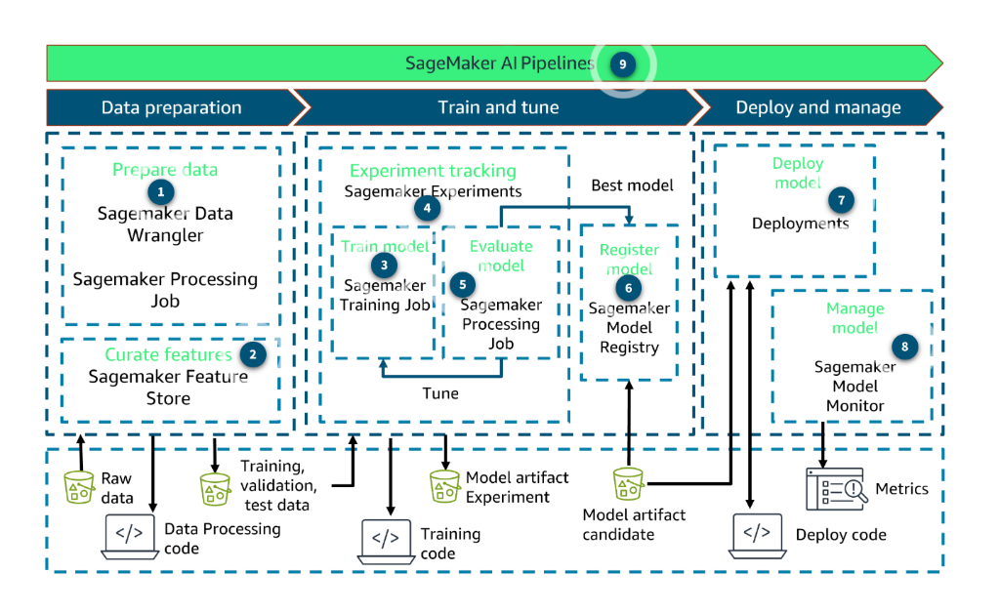
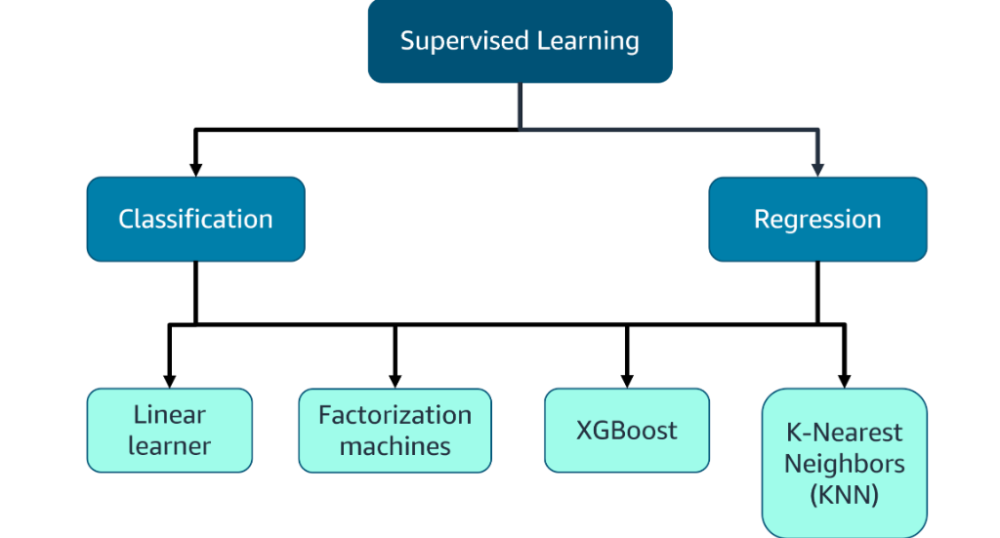
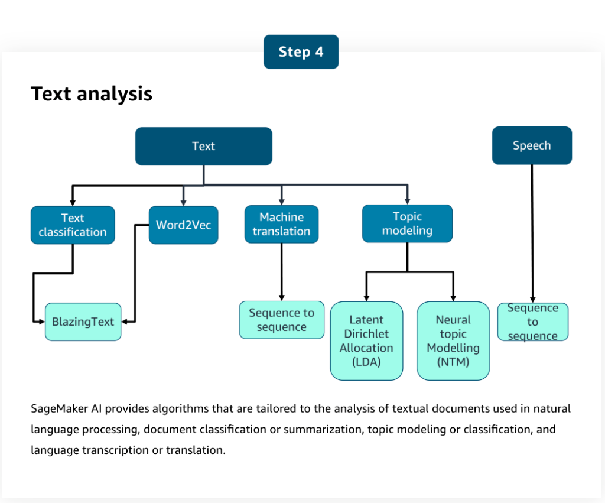

Amazon SageMaker AI Features
AWS AI Practitioner Exam (AIF-C01) Study Guide
Amazon SageMaker AI is a fully managed ML service. In a single unified visual interface, you can perform the following tasks: 1. Collect and prepare data. 2. Build and train machine learning models. 3. Deploy the models and monitor the performance of their predictions.
🏗️ SageMaker AI Feature Categories
SageMaker AI provides specialized tools for every stage of the machine learning lifecycle.
1. Data Preparation
- Amazon SageMaker Data Wrangler A low-code/no-code (LCNC) tool to import, prepare, transform, featurize, and analyze data through a web interface. You can also add custom Python scripts for advanced workflows.
- SageMaker Studio Classic Integration Built-in integration with Amazon EMR and AWS Glue for large-scale interactive data preparation and ML workflows within notebooks.
- SageMaker Processing API Allows running scripts and notebooks to process, transform, and analyze datasets. Supports frameworks like scikit-learn, MXNet, and PyTorch.
2. Feature Management
- Amazon SageMaker Feature Store A purpose-built repository to create, share, and manage features for ML development. It allows data to be ingested, stored, retrieved, and served to ML models for inference.
3. Model Building & Training
- Training Jobs SageMaker launches ML compute instances, uses your code/dataset to train the model, and saves artifacts in Amazon S3.
- Amazon SageMaker Canvas The primary LCNC option. It allows business analysts to build ML models and generate predictions without writing any code.
- Amazon SageMaker JumpStart A hub for pre-trained, open-source models (Foundation Models, etc.) that you can deploy or fine-tune with one click.
4. Model Evaluation & Tuning
- Amazon SageMaker Experiments A tool to track and compare multiple combinations of data, algorithms, and parameters to observe their impact on model accuracy.
- Automatic Model Tuning (Hyperparameter Tuning) Finds the best version of your model by running multiple training jobs with different combinations of hyperparameters and measuring success against a chosen metric.
5. Deployment & Inference
- SageMaker provides a broad selection of ML infrastructure (CPU/GPU/Inferentia) and deployment options (Real-time, Batch, Serverless, Asynchronous) to meet various latency and cost requirements.
6. Monitoring & Optimization
- Amazon SageMaker Model Monitor
Observes the quality of production models. It detects violations of user-defined thresholds for:
- Data Quality: Changes in data distribution.
- Model Quality: Accuracy drift.
- Bias Drift: Emergence of bias over time.
- Feature Attribution Drift: Changes in which features contribute most to predictions.
�️ SageMaker AI Workflow
SageMaker AI allows you to automate and manage the end-to-end ML lifecycle.

- Prepare Data: Use SageMaker Data Wrangler and Processing Jobs to clean and transform raw data.
- Curate Features: Store processed data in the SageMaker Feature Store for consistent use across training and inference.
- Train Model: Run SageMaker Training Jobs using built-in algorithms or custom scripts.
- Experiment Tracking: Use SageMaker Experiments to monitor and compare multiple training runs.
- Evaluate Model: Run Processing Jobs to calculate evaluation metrics (Accuracy, RMSE, etc.).
- Register Model: Store the best model version in the SageMaker Model Registry.
- Deploy Model: Deploy the model to an endpoint for real-time or batch Deployments.
- Manage Model: Use SageMaker Model Monitor to detect drift and maintain quality in production.
- Automation: Orchestrate the entire flow using SageMaker AI Pipelines.
�📂 Sources of ML Models
SageMaker AI provides multiple ways to build models, ranging from "zero-effort" to "full customization."
| Method | Level of Effort | Description |
|---|---|---|
| Pre-trained Models | Least Effort | Models ready to deploy or fine-tune immediately using SageMaker JumpStart. |
| Built-in Algorithms | Medium Effort | Highly optimized algorithms provided by AWS that scale automatically for large datasets. |
| Pre-made Framework Images | High Effort | Use pre-configured Docker images for common frameworks like TensorFlow, PyTorch, scikit-learn, MXNet, or Chainer. |
| Custom Docker Images | Most Effort | Build and bring your own Docker image with specific packages and software required for your unique model. |
🧮 SageMaker AI Built-in Algorithms (Cheat Sheet)
SageMaker AI provides algorithms for different categories of machine learning problems.
1. Supervised Learning
SageMaker AI provides several built-in general-purpose algorithms that you can use for either classification or regression problems.

-
Linear Learner Exam Triggers: "Base-line," "Simple Regression/Classification," "Yes/No." Typical Use Case: Predicting simple house prices.
-
XGBoost Exam Triggers: "Tabular Data," "Highly Accurate," "Structured Data." Typical Use Case: Predicting customer churn or defaults.
-
Factorization Machines Exam Triggers: "Sparse Data," "Recommendation Systems." Typical Use Case: Predicting movie ratings for recommendation engines.
-
K-Nearest Neighbors (KNN) Exam Triggers: "Proximity," "Similarity," "Non-parametric." Typical Use Case: Classifying images based on similarities.
2. Unsupervised Learning
Used for discovering hidden patterns without the need for pre-existing labels.

-
K-means Exam Triggers: "Clustering," "Groupings," "Segmentation." Typical Use Case: Dividing customer bases for targeted ads.
-
LDA & NTM Exam Triggers: "Topic Modeling," "Document Themes." Typical Use Case: Finding themes in thousands of news articles.
-
Object2Vec Exam Triggers: "Embeddings," "Vectorization," "Similarity Scaling." Typical Use Case: Creating math-based representations of books.
-
PCA Exam Triggers: "Feature Reduction," "Visualization," "Removing Noise." Typical Use Case: Simplifying 100 columns into 3 "main" columns.
-
Random Cut Forest (RCF) Exam Triggers: "Anomaly Detection," "Streaming Data," "Outliers." Typical Use Case: Spotting suspicious spikes in login attempts.
-
IP Insights Exam Triggers: "IP Addresses," "Security Patterns," "Anomalies." Typical Use Case: Flagging logins from unusual geographic locations.
3. Image Processing & Computer Vision
Specialized algorithms for visual data and time-series forecasting.

-
Image Classification Exam Triggers: "What is it?" "Single Label," "ResNet/ImageNet." Typical Use Case: Identifying a "Tractor" vs. a "Truck."
-
Object Detection Exam Triggers: "Where is it?" "Multiple Labels," "Bounding Boxes." Typical Use Case: Drawing boxes around "Cars" and "Pedestrians."
-
Semantic Segmentation Exam Triggers: "Pixel-level," "Masking," "Precise Boundaries." Typical Use Case: Identifying exact pixels of a tumor in an X-ray.
-
DeepAR Exam Triggers: "Forecasting," "Seasonality," "Time Series." Typical Use Case: Predicting future sales or stock levels.
4. Text Analysis & NLP
Algorithms designed for understanding and generating human-like text.

-
BlazingText Exam Triggers: "Word2Vec," "High-speed Text Classif," "Sentiment Analysis." Typical Use Case: Analyzing sentiment in millions of app reviews.
-
Seq2Seq Exam Triggers: "Translation," "Summarization," "Speech-to-Text." Typical Use Case: Automatically translating legal documents.
Last Updated: Jan 2026